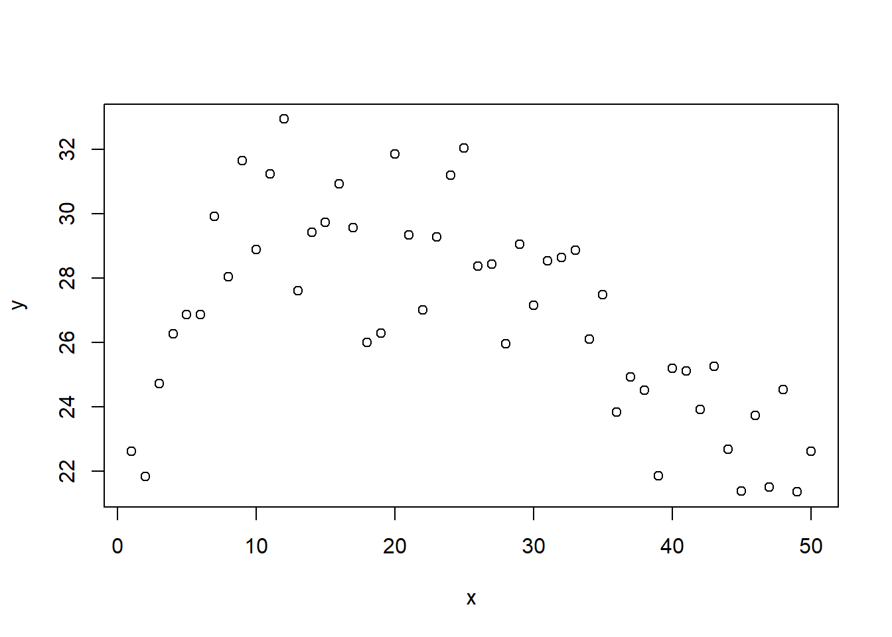
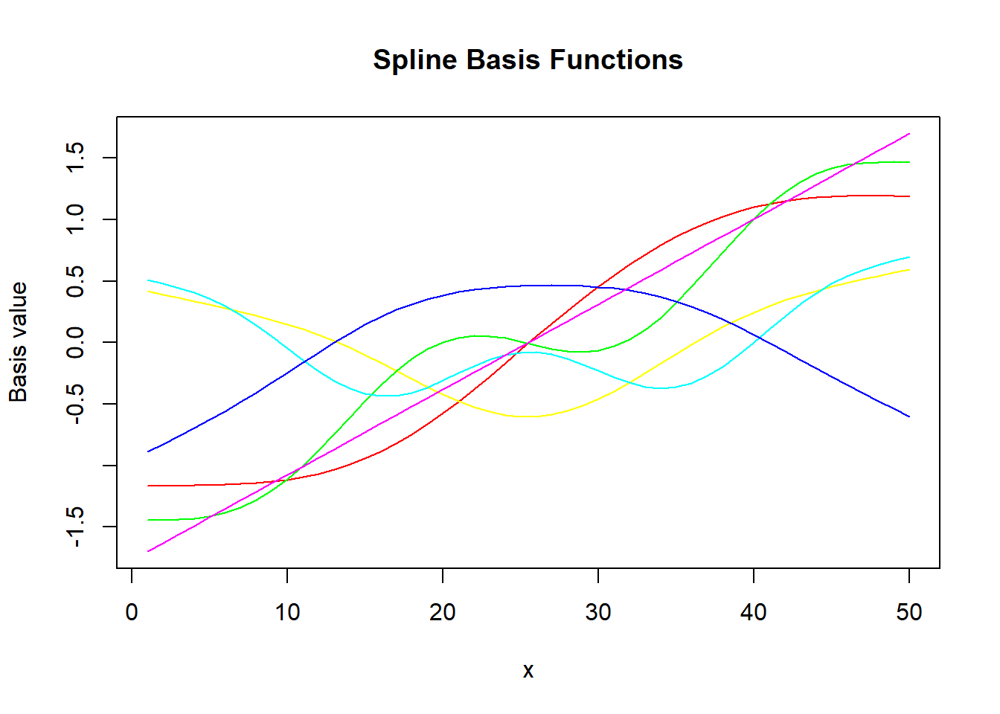
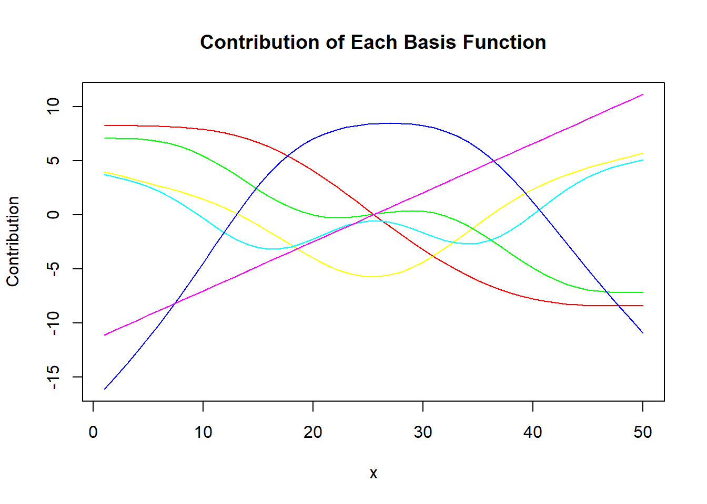
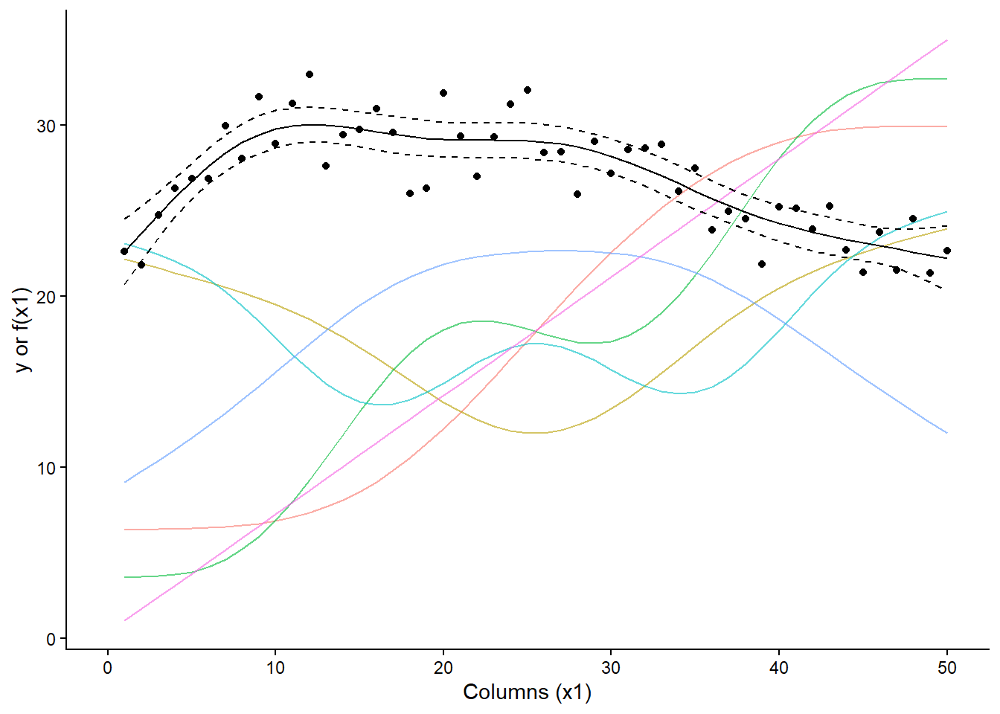
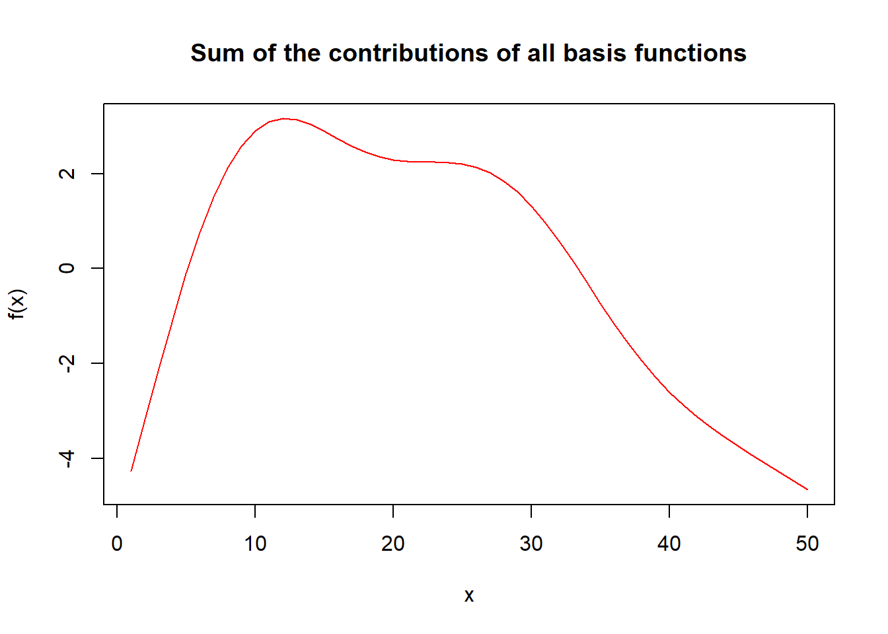

Day 17 Splines
October 21st, 2026
17.3 Non-parametric tools
- Minimize/relax assumptions
- No free lunches!
- Interpretability
- bias-variance tradeoff
17.3.1 Splines
- Splines are special cases of non-parametric tools.
- Introduced in the sixties (Schoenberg, 1964)
- They provide a flexible tool to model the variability in the data, where the functional (~ “the shape”) is unknown
Polynomials:
- good for local approximation
- bad for global approximation
We can represent the data with the equation \[y_i = \beta_0 + g(x_i) + \varepsilon_i, \\ \varepsilon_i \sim N(0, \sigma^2),\] where
\(g(x_i) = \sum_{i=1}^k B_i^m(x) \beta_i\).
B-splines
- minimize \(\sum_{i=1}^n \left\{ y_i - (\mathbf{x}_i'\boldsymbol{\beta}_x + \mathbf{B}^T(\mathbf{x}_i) \boldsymbol{b}) \right\}^2\)
Penalized splines
- low rank smoothers using a B-spline basis
- minimize \(\sum_{i=1}^n \left\{ y_i - (\mathbf{x}_i'\boldsymbol{\beta}_x + \mathbf{B}'(\mathbf{x}_i) \boldsymbol{b}) \right\}^2 + \lambda \boldsymbol{b}'\mathbf{D}\boldsymbol{b}\)
Cyclic splines
17.4 Thin-plate regression splines
- Origin of the name “thin-plate”
- radial basis functions
- supports multiple predictor variables (unlike other basis)
- avoid the problem of knot placement
- not so computationally costly, but may become more relevant for large data (scaling \(O(k^3)\))
- basis functions and basis function dimension
- See Chapter 5 in Wood (2017)
In thin-plate regression, we can represent the data with the equation \[y_i = \beta_0 + g(\mathbf{x}_i) + \varepsilon_i, \\ \varepsilon_i \sim N(0, \sigma^2),\] where \(\mathbf{x}_i\) is a \(d-\)vector with the predictors. Thin-plate smoothers estimate \(g(\cdot)\) by finding the \(\hat{f}(\cdot)\) that minimizes \[||\mathbf{y} - \mathbf{f}||^2 + \lambda J_{md}(f),\] where:
- \(\mathbf{y}\) is the vector of observations,
- \(\mathbf{f} = [f(\mathbf{x}_1), f(\mathbf{x}_2), \dots, f(\mathbf{x}_n)]^T\),
- \(J_{md}(f)\) is penalty functional affecting the ‘wiggliness’ of \(f\)
- \(\lambda\) is a smoothing parameter controlling the tradeoff between data fitting and smoothness of \(f\)

Figure 17.1: From Wood (2007)
x <- seq(1, 50, by = 1)
set.seed(42)
y <- 15 + 15*sin(sqrt(x*.15 - x*.006))+ rnorm(length(x), 0, 1.5)
plot(x, y)
splines_df <- data.frame(x, y)
m_spline_tp <- gam(y ~ s(x, bs = "tp", k = 7), method = "REML", data = splines_df)
splines_df$bs_spline <- predict(m_spline_tp, type = "response")
splines_df$bs_spline_se <- predict(m_spline_tp, type = "response", se.fit = T)$se.fit
knots <- m_spline_tp$smooth[[1]]$knots
coef(m_spline_tp)[grep("s\\(x\\)", names(coef(m_spline_tp)))]## s(x).1 s(x).2 s(x).3 s(x).4 s(x).5 s(x).6
## -7.076170 9.538457 -4.898365 7.277189 18.206627 6.552186beta_smooth <- coef(m_spline_tp)[grep("s\\(x\\)", names(coef(m_spline_tp)))]
Xp <- predict(m_spline_tp, type = "lpmatrix") # each column = basis function
# Remove intercept column for plotting
Xp_smooth <- Xp[, grep("s\\(x\\)", colnames(Xp))]
# Plot basis functions
matplot(x, Xp_smooth, type = "l", lty = 1, col = rainbow(ncol(Xp_smooth)),
main = "Spline Basis Functions", xlab = "x", ylab = "Basis value")
# Add contribution from each basis function
# multiply basis functions by their contribution
y_basis <- sweep(Xp_smooth, 2, beta_smooth, "*")
matplot(x, y_basis, type = "l", lty = 1, col = rainbow(ncol(Xp_smooth)),
main = "Contribution of Each Basis Function", xlab = "x", ylab = "Contribution")
df_basis <- as.data.frame(cbind(x, Xp_smooth)) %>%
pivot_longer(cols = `s(x).1`:`s(x).6`)
splines_df %>%
ggplot(aes(x, y))+
geom_line(aes(y = 18 + value*10,
group = name,
color = name),
show.legend = F,
data = df_basis,
alpha = .6)+
theme_classic()+
theme(panel.border = element_blank(),
panel.grid = element_blank())+
geom_vline(aes(xintercept = knots), data = data.frame(knots), linetype = 2)+
geom_line(aes(y = bs_spline+(bs_spline_se*1.96)), linetype = 2)+
geom_line(aes(y = bs_spline-(bs_spline_se*1.96)), linetype = 2)+
geom_line(aes(y = bs_spline))+
coord_cartesian(xlim = c(0, 50))+
labs(x = "Columns (x1)", y = "y or f(x1)")+
geom_point()
matplot(x, rowSums(y_basis), type = "l", lty = 1, col = rainbow(ncol(Xp_smooth)),
main = "Sum of the contributions of all basis functions", xlab = "x", ylab = "f(x)")
17.5 Final comments
- Generalized additive models
- Choosing parametric vs. semi-parametric
- Choosing types of splines
- B-splines
- P-splines
- Thin-plate splines
- Model selection
- G-side vs. R-side discussion
17.6 Resources
- Wood, S.N. (2017). Generalized Additive Models. Chapman and Hall/CRC. [link]
- Ruppert, D. (2004). Nonparametric Regression and Splines. In: Statistics and Finance. Springer Texts in Statistics. Springer, New York, NY. https://doi.org/10.1007/978-1-4419-6876-0_13